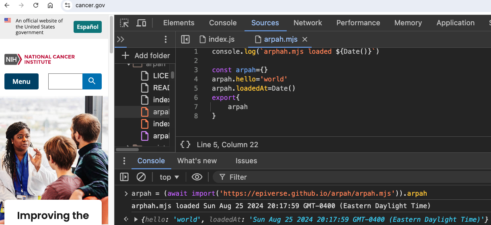
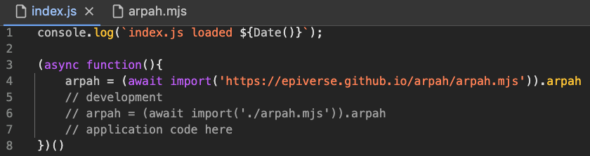

Prototype ARPA-H data fabric infrastructure.
Key design constraint: Data and applications are distributed accross GitHub infrastructure at no nominal cost to its users. No downloads or installations either.
There are two sets of core components.
One set provides a distributed API ecosystem where data assets and workflows can be orchestrated. The other set is focused on the management of generative embedded feature spaces for integrative, multi-modal, data analysis.
In both cases, code development makes full use of ES6 modules and application deployment relies on the same versioned environment where code is developed. See links above for more information.
The orchestration of workflows using those components makes extensive use of Github features aligned with CI/CD (continuous integration continuous development.
Components
- Web APIs (SDKs). In the case of Web Computing, Software Development Kits (SDKs) are JavaScript Objects with methods that operate HTTP REST APIs ecosystems (data commons).
- Generative AI embedding services, as web services or, when possible, as in-browser inference engines (collab with Stanford?). The representation of data in a shared feature space is (novel feature) where distributed/federated learning is developed with resort to WebRTC protocol (peer-to-peer).
- Github will be used to manage code, deploy applications (as github pages), and disseminate repositories that reproduce infrastructure to other GitHub organizations.
Get started

The ARPA-H SDK can now be loaded from anywhere, including other domains, such as cancer.gov:
